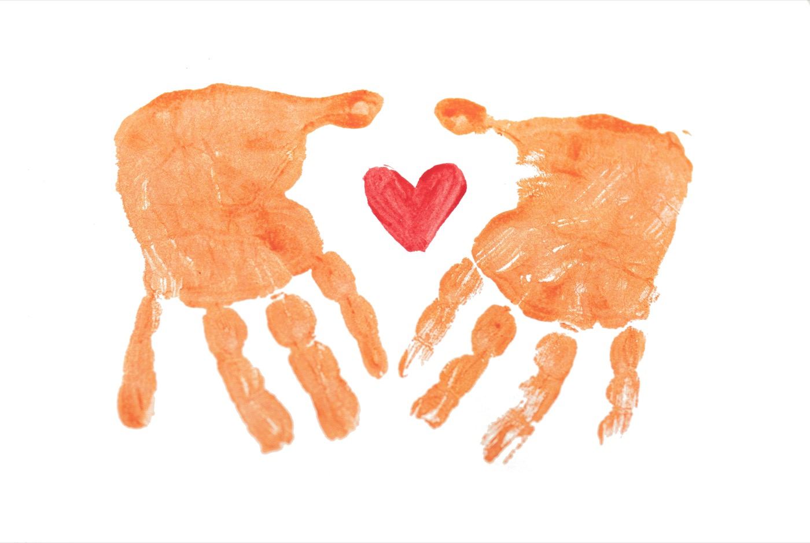

Helping your child
thrive as
exactly who they are.
One-to-one support for autistic children in Stockholm, in English or Swedish. Shaped around your child, never a template.
Book an introductory callWho I am
About me
Hi! I'm Ingrid, a Board Certified Behavior Analyst (BCBA) working one-to-one with autistic children across Stockholm, in English and Swedish.
I've spent my working life around autistic children. I hold a Master's specialized in Applied Behavior Analysis from Vanderbilt University, where I also worked in autism research. Since then I've spent two years in ABA clinics and schools, working in homes, classrooms and clinic settings, and four years in autism research with children of all ages. Today, alongside my clinical work, I'm a PhD researcher in autism at Karolinska Institutet (KIND), the Center of Neurodevelopmental Disorders.
If those years have taught me one thing, it's that no two autistic children are alike, and that children flourish when the people around them start from who they are, not from who they're "supposed" to be. That's the belief I bring into every family I work with: your child is not a problem to be fixed. My job is to work alongside them, so they feel safe, understood, and free to grow as exactly who they are.
And my favorite part of the job? Watching what happens when a child and their environment come into alignment. Children who have had a hard time connecting, or reaching their full potential, can thrive once they're given the right conditions and the right tools. Helping families get there, with concrete tools that make everyday life look and feel better for the whole family, is the most rewarding thing I know.
My approach
How I work
My work is grounded in applied behavior analysis (ABA), the science of how people learn. In practice, that means I pay close attention to what helps your child communicate, play and learn, and build the support around exactly that.
Sessions are one-to-one and play-based, usually at home or in school. We start from what your child already loves, whether that's trains, drawing or water play, and work toward goals your family actually cares about: more ways to communicate, more autonomy, more play, more good days. And because you know your child best, I work closely with you as parents too, with concrete, compassionate tools that carry what works in sessions into everyday life.
Everything I do is assent-based: your child's yes matters, however they express it. I follow their lead, honor how they communicate, and never push a child to simply comply. If you've read criticism of ABA online, I've read it too, and I take it seriously. The goal is never to make your child "less autistic". If something doesn't feel right for your child, we change it.
Getting started
-
We start with a conversation
You tell me about your child; I tell you how I work.
-
Getting to know your child
I get to know your child's strengths, interests and needs, at their pace.
-
A plan for your family
Goals that feel meaningful to your family, and a program shaped around them.
-
Sessions and follow-up
Regular sessions, support for you as parents, and follow-up so it all feels good for your child.
Ready when you are: step one is just a conversation.
Certified
BCBA
An international certification with high standards for education, clinical experience and ethics.
Research
PhD researcher in autism
Active in autism research with children of all ages, alongside clinical work.
Always
Your child, as they are
Assent-based and neurodiversity-affirming. Never changing who your child is.

Shall we talk about your child?
The easiest way to start is a free, 30-minute introductory call: you tell me about your child, I tell you how I work, and you take it from there. In English or Swedish, whichever feels most natural. A few lines about your child is plenty to start.
Email me
ingridshragge@gmail.com
+46 70 406 30 22
Stockholm and surrounding areas